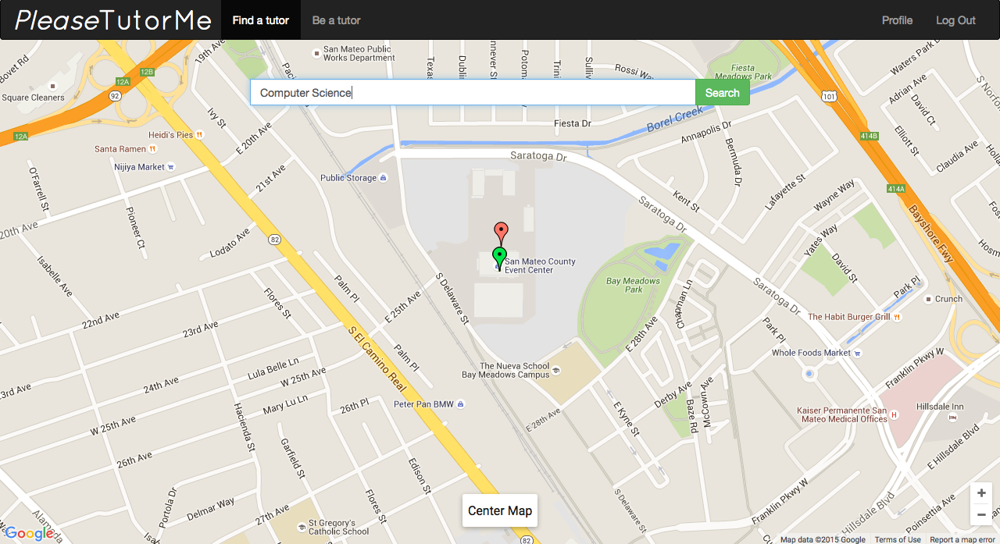

PleaseTutorMe is a web application designed to bring available tutors to clients
within minutes. Users can search by subject for tutors, or offer to tutor others in subjects
they are qualified to teach. A Google Maps UI allows users to find nearby available tutors
and decide on a convenient meetup location. When users request a tutoring session, the tutor
is notified via text using Twilio. Created at HackingEDU 2015 in San Mateo, CA.